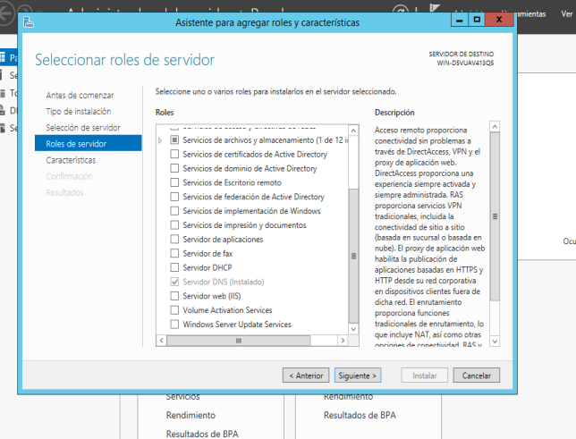
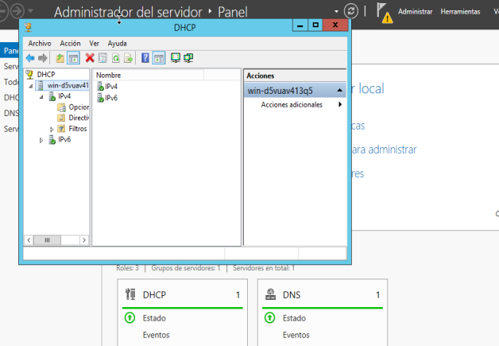
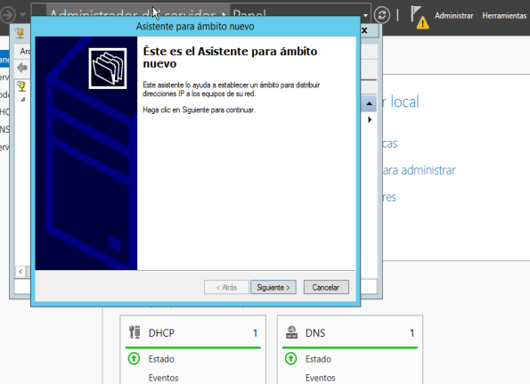
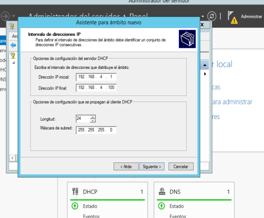
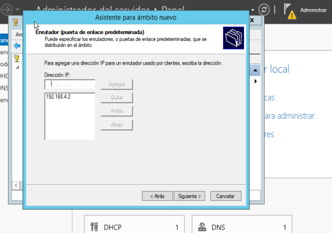
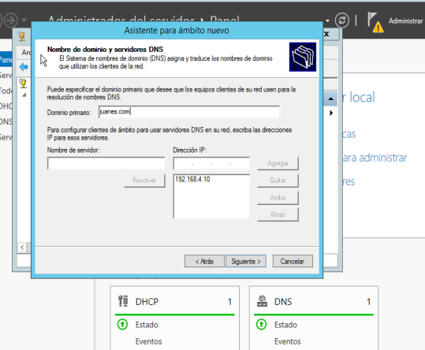
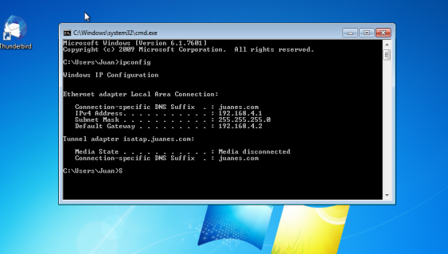
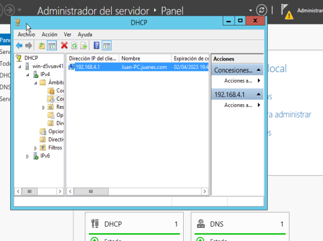

Tutorial de instalacion servidor DHCP
Marzo 25, 2023 posted por Juan E. Castro
Es un protocolo de red que utiliza una arquitectura cliente-servidor. Por tanto, tendremos uno o varios servidores DHCP y también uno o varios clientes, que se deberán comunicar entre ellos correctamente para que el servidor DHCP brinde información a los diferentes clientes conectados. Este protocolo se encarga de asignar de manera dinámica y automática una dirección IP, ya sea una dirección IP privada desde el router hacia los equipos de la red local, o también una IP pública por parte de un operador que utilice este tipo de protocolo para el establecimiento de la conexión. A continuacion se relizara un tutorial de como se realiza la intalacion de un servidor de DNS en Windows Server 2012.
Requisitos:
- Direccion Ip estatica
- Servidor DNS
- Maquina virtual Windows Server 2012
- Maquina virtual con Window XP, 7, 8, 8.1
Paso 1: Intalacion del servidor DHCP.
Se realiza la instalacion del servidor de DHCP a traves del Administrador del servidor en la opcion Agregar Roles y Caracteristicas.
Paso 2: Configuracion del servidor DHCP.
Se realiza la configuracion del servidor de DHCP en la seccion herramientas del Administrador del Servidor en la opcion DHCP. Se abre la carpeta principal y nos situamos en la carpeta de IPv4.
Paso 3: Creacion y configuracion del Ambito.
Situados en la carpeta de IPv4 damos click derecho y seleccionamos la opcion de Ambito Nuevo y procedemos a la configuracion de un nuevo Ambito para el servidor DHCP. El nombre del ambito puede ser cualquiera.
Paso 4: Configuracion del rango del Ambito.
En el paso anterior empezamos con la configuracion del Ambito Nuevo, continuando con esto lo primero que que es necesario configurar es el rango de direcciones las cuales repartira nuestro servidor DHCP.
Paso 5: Configuracion de la direccion para router del Ambito.
En este paso se coloca la direccion de puerta de enlace configurada en la Ip estatica de la maquina virtual, para el caso es 192.168.4.2 se da en agregar y siguiente.
Paso 6: Configuracion de nombre de dominio y DNS.
Como requisito inicial era necesario tener un servidor de DNS configurado, para este caso el servidor configurado tiene el nombre de juanes.com y tiene la direccion Ip 192.168.4.10.
Pruebas de funcionamiento del servidor DHCP.
Para realizar la prueba de que el servidor esta bien configurado, vamos a nuestra maquina virtual configurada como cliente. Con el comando ipconfig en la consola del sistema (cmd) podemos observar que nuestro servicio DHCP esta funcionando correctamente. Tambien lo podemos comprobar en el lado del servidor entrando a la carpeta del ambito creado y entrando en la otra carpeta llamada Concesiones de direcciones.
 